01
Visual Factors
Refined emotion measurement through E-PrEmo and tested how five visual factors shape positive affect.
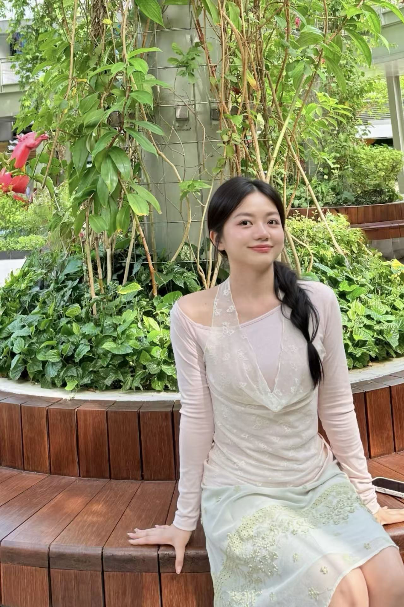
Hi, I'm Xinyu. My earlier research examined how user emotions and states can be measured through psychometric methods, physiological sensing, and behavioral observation, then translating evidences into design strategies. In the future, I aspire to pursue research in physical AI. I've always believed Intelligence is not always about efficiency—it can be more stories about “joy” and “companion”, better understanding such nuanced and diverse human emotions and affection is vital to shaping the future of Human-AI symbiosis, especially in tracks like digital companionship and home care.
I wanna continue to link understanding human affect with real-world assistance. The carrier does not have to be humanoid, the research focus is accurate interpretation and appropriate action.
Key words: HCI; Human-AI/robots interaction; Affective Computing; Multimodal Perception; Digital Health.
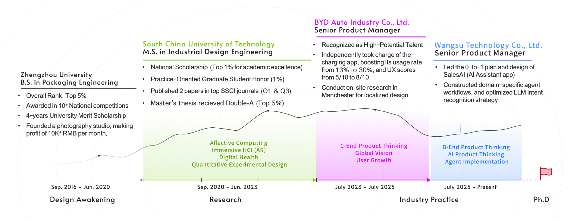
Refined emotion measurement through E-PrEmo and tested how five visual factors shape positive affect.
Built and evaluated a smartphone AR psychometric tool using subjective scales and physiological measures.
Connected causal analysis, multimodal role-play research, and an AR + AI concept for real-world social interaction.
Frontiers in Psychology (SSCI-Q1 IF 3.8) 2022 Vol.12
Zhiyong Xiong(advisor), Xinyu Weng(student first author), Yu Wei · DOI: 10.3389/fpsyg.2021.772642
Software products are the most accessible and low‑cost psychotherapeutic tools for the general public to regulate emotions. Yet there is no clear research consensus on how specific visual design elements influence emotion regulation.
Goal: Investigate the correlation between visual factors and multi-dimensional complex emotions to guide emotion regulation product design.
🟡 Level 1: Initial Paradigm Selection
├─► Psychophysiological Methods
│ e.g., Heart Rate, Skin Conductance
└── ❌ EXCLUDED — Can only confirm arousal level; cannot indicate valence (positive/negative).
│
└─► Self‑Report Assessment ✅ SELECTED
│ Intuitively records subjective user experiences. Ideal for providing direct
│ empirical guidance in product design.
│
▼
🔵 Level 2: Methodological Direction
├─► Dimension‑Based Methods
│ e.g., Valence–Arousal Space
└── ❌ EXCLUDED — Generalized emotional states; hard to translate into design language.
│
└─► Classification‑Based Methods ✅ SELECTED
│ Maps specific emotion categories directly to distinct design elements
│ (e.g., Blue → calmness; Red → excitement).
│
▼
🟢 Level 3: Concrete Classification Tools
├─► Personal Profile Index (PPI)
└── ❌ EXCLUDED — Too outdated (1996); trait‑like psychological profiles.
├─► Differential Emotion Scale (DES)
└── ❌ EXCLUDED — Text-based 30 items (10 subscales × 3 questions each); excessively tedious for users.
│
└─► PrEmo Method 🌟 🎯 FINAL FOCUS
│ Specially built for products & design. Uses non‑verbal cartoon animations
│ to bypass linguistic barriers and capture intuitive user experiences.
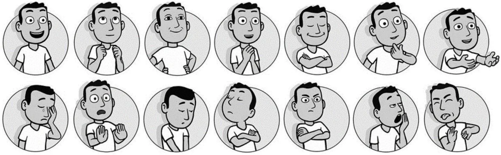
| Dimension | Traditional PrEmo | E-PrEmo (This Study) |
|---|---|---|
| Emotion Pool Capacity (指标库库容) |
Fixed & Rigid Applies a static set of 14 generalized emotion labels regardless of the product type. |
Context-Specific Contextually pre-screens and customizes 10 specific emotions (5 positive & 5 negative) from a foundational pool of 60 emotions for distinct design factors. |
| Data Quantification (数据量化机制) |
Categorical Count Users independently check "Presence/Absence" or rate on a discrete 3-point scale for each emotion. — Analogous to an old-fashioned stethoscope. |
Algorithmic Weighting Users autonomously select and rank emotions based on multi-layered, complex psychological states. Converts subjective rankings into precise, continuous scores via the formula: 10 × (n − m + 1) / n. — Analogous to an ECG (Electrocardiogram). |
| Core Application Scope (核心应用场景) |
General / Physical Artifacts Primarily oriented toward the aesthetic and psychological measurement of physical hardware (e.g., automobiles, consumer electronics). |
Digital Interaction / Digital Therapeutics Specially tailored for virtual software interfaces, UI/UX interactions, and digital sub-healthy psychological intervention contexts. |
Core Variables
n: Total number of emotion cards selected by a participant in a single-factor test.
m: The subjective ranking of a specific emotion card within the total selection.
Weight Calculation
Determine the relative weight of a single emotion within the overall profile using the formula (n − m + 1) / n.
Final Scoring
Scale the weight against a maximum score of 10 to output the final quantified score for each emotion index:
Score = 10 × (n − m + 1) / n
| # | Factor | Source |
|---|---|---|
| a | Text | Lin et al., 2012 |
| b | Interactive data visualization | Fairclough & Dobbins, 2020 |
| c | Emotional stickers | Nanda et al., 2012; Pfeifer et al., 2021 |
| d | Figures / Geometry | — |
| e | Virtual reality vision | Barbosa et al., 2019 |
H1: Factors a, b, c, d, e can improve the positive emotion index of users.
H2: The influence of each factor can be ranked as a < b < c < d < e.
Quasi-experimental design with 10 Asian young participants. Each experienced all five factors in randomized order, using E-PrEmo card selection + ranking after each task.
Individual Weighting & Mean Aggregation
Applied a ranking-weight algorithm to compute each participant's emotional scores per design element.
Aggregated and averaged data across 10 participants to extract a unique, dynamic "emotional fingerprint" for each factor.
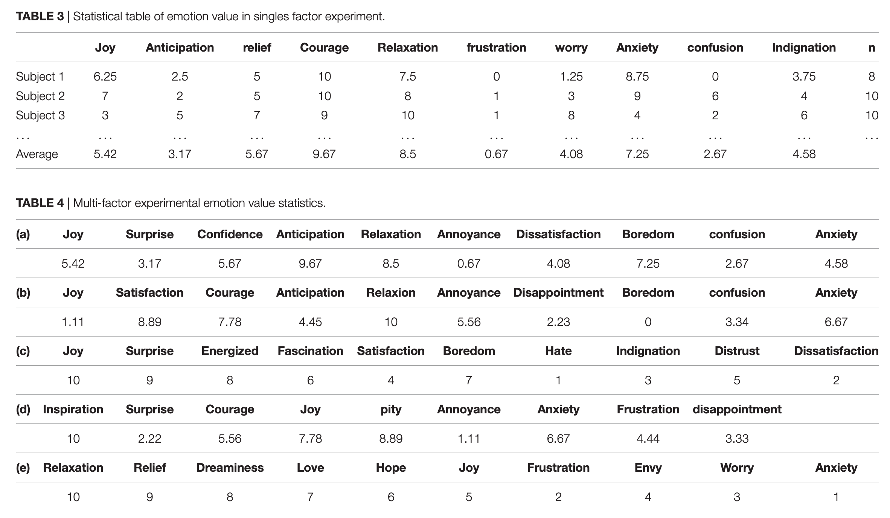
Positive vs. Negative Valence Evaluation
Compared score distribution between the positive group and the negative group.
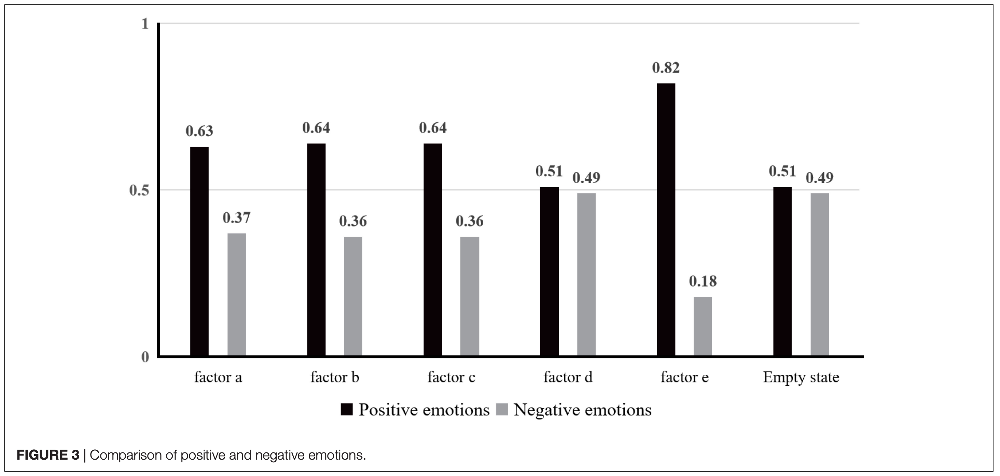
H1 confirmed ✅ — All factors boost positive emotions.
Actual ranking (H2 rejected): e (VR) > c (Stickers) > b (Data viz) > a (Text) > d (Geometry). VR had the strongest positive emotional impact; geometry showed minimal effect.
| Factor | Dominant Emotion | Design Insight |
|---|---|---|
| VR | Relaxation, Relief | Immersive scenes evoke imagination |
| Stickers | Joy, Surprise | Enhance delight |
| Data viz | Satisfaction | Encourage users to update/use frequently |
| Text | Anticipation, Relaxation | To improve users’ expectations and desire for content |
VR-based emotional mapping scenes are the most effective positive emotion driver. E-PrEmo effectively captures multi-emotion responses. Design recommendation: prioritize VR > stickers > data viz > text; deprioritize geometry.
The Arts in Psychotherapy（SSCI-Q3 IF 1.7） 2022 Vol.80
Zhiyong Xiong(advisor), Xinyu Weng(student first author), Yu Wei · DOI: 10.1016/j.aip.2022.101934
· GAD & Need — Generalized Anxiety Disorder (GAD) affecting millions, creating an urgent need for accessible psychometric and psychotherapeutic tools.
· Why SPT — While cognitive-behavioral therapy (CBT) is effective for GAD, it faces barriers including logistical inconvenience, cost, social stigma(Harvey & Gumport, 2015). Sandplay Therapy (SPT), as a gamified alternative, is more widely accepted and commonly used in campus(Roesler, 2019).
· VR/AR Opportunity — However, traditional SPT relies on physical materials and 12–16 in-person sessions, limiting scalability. Virtual technologies are increasingly adopted, offering new avenues to digitize psychotherapeutic tools (Colombo et al., 2019).
Goal: Design SandplayAR and evaluate its effectiveness for young with anxiety.
AR was chosen for stronger self-presence via virtual–real integration; real-environment observation better than fully digital; more flexibly configures per patient with symptom-specific needs (Eshuis et al., 2020; Zimmer et al., 2021).
| Dimension | VR | AR |
|---|---|---|
| Environment | Fully digital | Real + virtual 3D |
| Self-presence | — | Stronger (Eshuis et al., 2020) |
| Cost | Requires headset | Smartphone-based |
| Adaptability | Fixed scenarios | Flexible per patient |
· Components: 2D recognition cards (green = land, blue = water), AR camera recognition, 3D world building, head-mounted cardboard, intelligent report generation, optional online counseling.
· Flow: Prepare → Scan cards → Build 3D world → Name & describe → System analysis → Report → Optional therapy call.
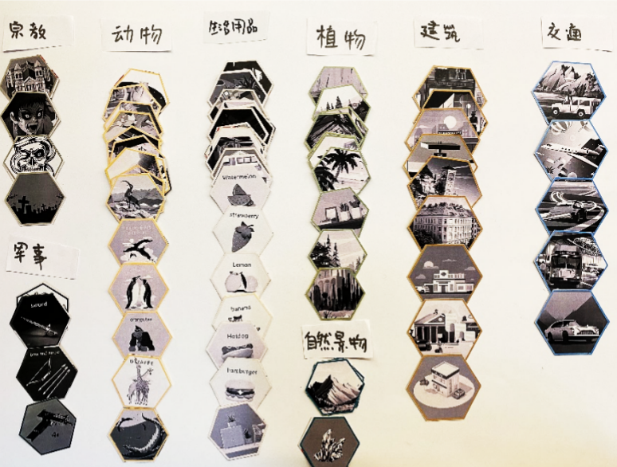
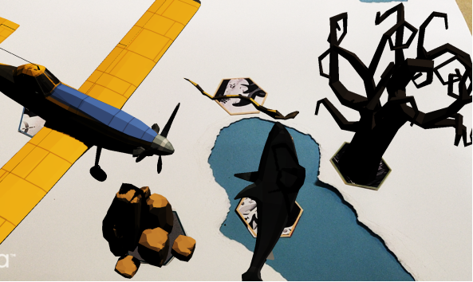
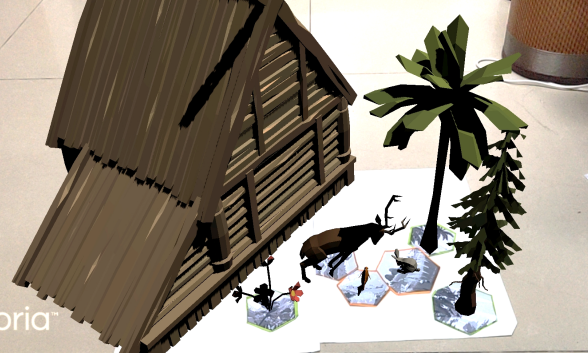
| Participants | 20 (GAD score > 5, Age 15–30), split into SandplayAR (experimental) vs traditional sandplay (control). |
|---|---|
| Metrics | Subjective: SIHEQ (22-item, 3 dimensions, 7-point Likert)；SUS usability (10-item, 5-point Likert). Physiological: SC (skin conductance); SBP (systolic BP), recorded continuously pre- and post-test. |
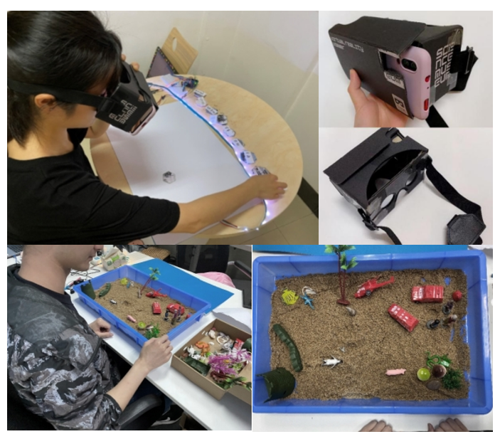
| Hypothesis | Result | p-value |
|---|---|---|
| Hoa (Unconscious emergence) | Rejected ✅ SandplayAR significantly better | P < 0.05 |
| Hob (Conscious activation) | Rejected ✅ SandplayAR significantly better | P < 0.05 |
| Hoc (Memory recognition) | Not rejected ❌ | n.s. |
· SIHEQ Top items: showed significant effects (P < 0.05) on unconscious emergence and conscious feeling activation. Specifically, Q8 "New experience different from past" — 6.0 (AR) vs 3.8 (control); Q4 "Creativity stimulated" — 5.8 vs 4.2; Q10 "Artistic beauty" — 5.8 vs 3.2.
· Physiological: SBP dropped significantly in both groups. SC dropped only in the AR group (P = 0.023), indicating AR's superior physiological intervention.
· SUS Usability: High willingness to use (4.0/5), easy to learn (4.0/5). Qualitative friction points: occasional camera defocusing, 3D model occlusion.
| Principle | Core |
|---|---|
| Dynamic 3D objects | Ensure rendering stability (no flickering and occlusion) |
| Portable 2D cards | Recognition accuracy is critical |
| Biofeedback integration | Real-time physiological data visualization — could help self-regulation & feedback |
biofeedback, multiplayer mode, multi-sensory factors, clinical trials.
Master's Thesis Study Correlation Study N = 101
Examining how real-world social support relates to online social engagement through the mediating role of social anxiety.
Social support helps individuals maintain social identity and gain emotional support, material assistance, information, services, and new social connections. Stronger support networks improve the ability to cope with environmental challenges, while insufficient support is associated with anxiety, depression, and more serious mental-health risks.
Online interaction can reduce pressures related to appearance, immediate verbal expression, and nonverbal self-presentation. Its virtuality, anonymity, and asynchronous nature may therefore be especially attractive to people with social anxiety.
However, online interaction is not equivalent to face-to-face interaction. Weak ties, high self-disclosure, accelerated intimacy, and the concealment of personal limitations may create support that differs from stable real-world support.
Research problem: Inadequate real-world support may intensify social anxiety; anxiety may encourage dependence on online socialization; prolonged online compensation may then reduce face-to-face interaction and the formation of strong ties.
This study examined the real-world social relationships of people with social anxiety, their offline and online social engagement, and the associations among these factors. A mediation model tested whether social anxiety explained the pathway through which real-world support affected online engagement.
| Hypothesis | Statement |
|---|---|
| H1 | Real-world social support significantly and negatively predicts online social engagement. |
| H2 | Social anxiety mediates the relationship between real-world social support and online social engagement. |
An online survey was distributed in Guangdong Province using convenience cluster sampling. Of 120 questionnaires, 101 valid responses remained, yielding an 84.16% valid response rate. Participants were 18–33 years old (M = 23.96, SD = 2.71); 39 were men and 62 were women.
| Measure | Purpose | Reliability / Scoring |
|---|---|---|
| SSRS | Objective support, subjective support, and utilization of social support. | 10 items; four-point scale; Cronbach's α = 0.92. |
| LSAS | Fear and avoidance across social and performance situations. | Social-anxiety threshold = 38; Cronbach's α = 0.92. |
| Online Social Engagement Scale | Scope, frequency, behavior, willingness, motives, and perceived impact of online interaction. | Higher scores indicate stronger dependence on online socialization. |
SPSS 26.0 was used for descriptive statistics, partial correlations, independent-samples t tests, one-way ANOVA, and multiple-response cross-tabulation. Mediation was tested with Hayes' PROCESS Model 4 using 5,000 bias-corrected bootstrap resamples. Gender and age were controlled.
After controlling for gender and age, real-world social support was negatively correlated with social anxiety (r = -0.341, p < 0.001), while social anxiety was positively correlated with online social engagement (r = 0.245, p < 0.01).
Real-world support negatively predicted online engagement (c = -0.0931, p = 0.0115) and social anxiety (a = -1.9677, p < 0.001). With both variables in the model, social anxiety positively predicted online engagement (b = 0.0352, p = 0.0142), while the direct effect of support was no longer significant (c′ = -0.0239, p = 0.7067).
Key result: The indirect effect was -0.0692, 95% CI [-0.1358, -0.0153], accounting for 74.33% of the total effect. Social anxiety fully mediated the relationship, supporting H1 and H2.
Participants aged 18–25 reported lower real-world support and higher social anxiety than those aged 26–33. Among all participants, 78.22% reached the LSAS threshold for social anxiety. Face-to-face interaction decreased as anxiety increased, while text-based online communication was the most common online mode among socially anxious participants.
Weaker real-world social support was associated with higher social anxiety and greater dependence on online socialization. The effect of real-world support operated primarily through social anxiety rather than through a direct pathway.
Young adults aged 18–25 were especially vulnerable: they reported lower real-world support and higher anxiety while facing interpersonal, academic, romantic, and employment pressures.
Intervention implication: Design should help users gain face-to-face experience, develop offline social skills, and form sustainable strong ties so that weak online connections can become meaningful real-world support.
| Key Question | Finding |
|---|---|
| Does real-world support affect online socialization? | Yes. The total effect was significant, but the direct effect became nonsignificant after social anxiety entered the model. |
| What role does social anxiety play? | It fully mediates the relationship and accounts for 74.33% of the total effect. |
| Who showed greater vulnerability? | Participants aged 18–25 reported lower support and higher social anxiety. |
| How did communication differ? | Higher anxiety was associated with less face-to-face interaction and greater preference for text-based communication. |
| What should interventions prioritize? | Offline skills, face-to-face experience, and sustainable strong relationships. |
Master's Thesis Study Role-Play Experiment CBT
A controlled social scenario combining self-report, psychophysiological sensing, behavioral observation, and bodily-response assessment.
Social anxiety involves persistent fear of social situations in which a person may be scrutinized or negatively evaluated. Questionnaire scores can identify severity, but they provide limited evidence about when anxiety emerges, which social touchpoints trigger it, and how cognition, emotion, physiology, and behavior interact in a specific situation.
Role-play-based exposure creates a repeatable social setting in which participants encounter realistic interpersonal stressors while researchers observe changes across multiple channels.
Research problem: How can a controlled but realistic social scenario reveal the cognitive, emotional, physiological, behavioral, and bodily mechanisms of social anxiety more precisely than questionnaires alone?
The study aimed to design and validate a role-play-based situational exposure experiment for young people with social anxiety.
| Objective | Focus |
|---|---|
| 01 | Elicit authentic anxiety responses through common social situations involving unfamiliar people, public expression, and relationship initiation. |
| 02 | Capture self-cognition, subjective distress, physiological arousal, avoidance and safety behaviors, and bodily symptoms. |
| 03 | Identify critical frustration touchpoints and translate them into cognitive-behavioral intervention directions. |
Participants were screened with the Liebowitz Social Anxiety Scale. Between-group analysis compared people without social anxiety (LSAS < 38) with those showing mild or higher social anxiety (LSAS ≥ 38). Within-person analysis used time to examine physiological changes throughout the exposure.
| Dimension | Measurement |
|---|---|
| Cognition | Pre-exposure self-cognition covering negative body image, excessive self-focused attention, and expectations of others' evaluations. |
| Emotion | SUDs ratings for eight social touchpoints, supported by GSR and heart-rate measures of arousal. |
| Behavior | Video-coded avoidance and safety behaviors such as drinking water, avoiding eye contact, head scratching, and fidgeting. |
| Bodily response | Self-reported symptoms, including blushing and increased heart rate, corrected where observable through video review. |
A wrist-worn device transmitted 50 data packets per second containing skin conductance, acceleration, angular velocity, heart rate, and blood-oxygen data. Physiological signals were interpreted as arousal rather than emotional valence.
The exposure was staged as a meal at a Chaoshan beef hot-pot restaurant. The participant knew only Friend A, while A, B, and C already knew one another. The participant entered late, greeted the group, found a seat, introduced themselves, expressed an opinion in an artificial-intelligence discussion, remained alone with C after the friends left, initiated a conversation, and exchanged contact information.
Role players created controlled pressure through sustained attention, deliberately cool responses, silence, or looking at their phones. During the one-to-one stage, C generally waited for the participant to initiate conversation. The script was concealed from participants, who could interrupt or withdraw at any time.
| Stage | Activity | Duration |
|---|---|---|
| 1–2 | Consent and LSAS screening | 7 min |
| 3–5 | Scenario briefing, pre-exposure cognition scale, and physiological baseline | 8 min |
| 6 | Role-play situational exposure | 15–20 min |
| 7–8 | SUDs and bodily-symptom scales, followed by an interview for the social-anxiety group | 18 min |
Video and physiological data were aligned by time. GSR and heart-rate values were cleaned and averaged in 30-second intervals, then matched with behavioral stages and observed safety behaviors.
The mild-or-higher social-anxiety group reported substantially greater distress than the no-anxiety group (38.00 ± 14.47 vs. 8.80 ± 6.54; t = 4.326, p < 0.001), confirming that the scenario effectively elicited anxiety responses.
Self-cognition, social anxiety, and subjective distress were all positively correlated. Negative self-cognition significantly predicted social anxiety (coefficient = 2.037, p = 0.001), explaining 45.1% of its variance. Negative body image appeared in 88.24% of socially anxious participants with maladaptive self-cognition.
Arousal and anxiety behaviors increased during entry, greeting, self-introduction, public opinion-sharing, being left alone with an unfamiliar person, and requesting contact information. Responses eased when attention shifted away and after exposure ended.
Individual variation: Event-specific physiological changes appeared across anxiety levels, but their magnitude and duration varied substantially. Very severe anxiety produced sustained GSR elevation, while mild anxiety showed smaller peaks around public expression.
The role-play experiment successfully captured cognitive, emotional, physiological, behavioral, and bodily responses in a concrete social setting. Aligning subjective distress, sensor data, video behavior, and social touchpoints made it possible to locate when and how anxiety emerged.
Three major categories of frustration points were identified: entering and participating in gatherings with unfamiliar people; becoming the center of attention and expressing oneself; and being alone with an unfamiliar person while attempting to build a relationship.
| Strategy | Description |
|---|---|
| Cognitive restructuring | Correct distorted judgments of others' evaluations and build confidence in appearance. |
| Skills training | Practice eye contact, stronger speaking volume, and body orientation toward interaction partners. |
| Attention retraining | Shift attention from self-monitoring toward the interaction partner and conversation. |
| Gradual exposure | Enter real social situations progressively while reducing avoidance and safety behaviors. |
| Constructive evaluation | Assess social performance and its consequences more accurately and reduce excessive focus on failure. |
| Key Question | Finding |
|---|---|
| Was the scenario effective? | Yes. The social-anxiety group reported significantly greater distress: 38.00 ± 14.47 vs. 8.80 ± 6.54, p < 0.001. |
| What predicted social anxiety? | Negative self-cognition explained 45.1% of the variance. |
| What was the most prominent cognitive issue? | Negative body image appeared in 88.24% of participants with maladaptive self-cognition. |
| What were the main frustration points? | Gatherings with strangers, public self-expression, and one-to-one relationship initiation. |
| What did physiological sensing add? | GSR and heart rate located the timing and touchpoints of arousal, though they could not determine emotional valence alone. |
Master's Thesis Design AR + Mobile Digital Intervention
A connected two-terminal system that translates research on social anxiety into support before, during, and after real-world social interaction.
Social anxiety spans the entire social journey. Before interaction, users may experience negative thoughts, expectations of failure, and insufficient social skills. During interaction, they may struggle to initiate contact, become overly self-focused, show attentional bias, or feel pressure to respond. After interaction, they may find it difficult to maintain relationships, stay in contact, and remember personal details about friends.
AR can place assistance directly within the real-world context in which anxiety occurs. AI adds contextual interpretation, personalized prompts, and supportive companionship. Together, they move intervention beyond a separate clinical or screen-based setting and into everyday social situations.
Design opportunity: Support the complete journey from cognitive preparation and real-world interaction to ongoing relationship maintenance.
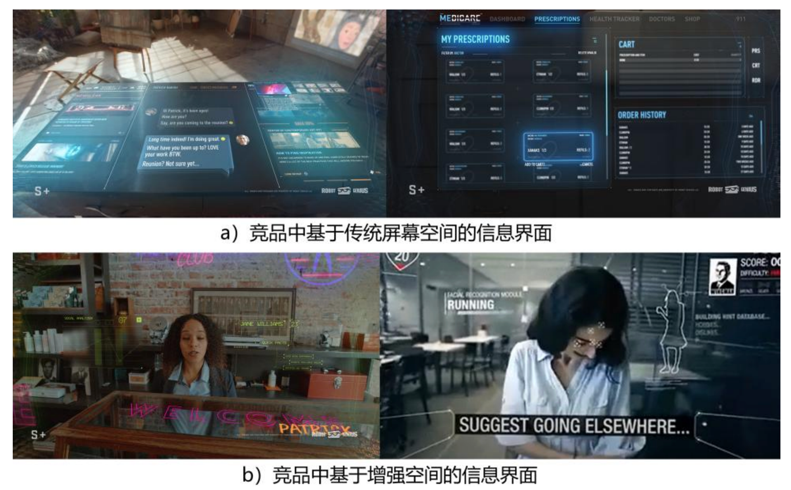
Product requirements were organized around three stages of the social journey. Each psychological or behavioral need was translated into a product opportunity and assigned to the AR application, the mobile application, or both.
| Stage | User Need | Product Response | Terminal |
|---|---|---|---|
| Before | Correct negative cognition and learn social skills | Social Classroom, expert courses, user stories, and cognitive and skills training | Mobile |
| During | Find cues and initiate interaction | Permission-based profile cards, facial, action, and emotion recognition | AR |
| During | Receive encouragement and technique prompts | Context-aware AI assistant with positive reinforcement | AR |
| During | Redirect self-focused attention | Adaptive cues around the focused social partner | AR |
| During | Make interaction engaging and visible | Gesture interactions, social metrics, and Encounter Rose | AR + Mobile |
| After | Continue and maintain relationships | Limited chat, Dusty Friends reminders, and private friend notes | Mobile |
| Dimension | Definition |
|---|---|
| Product | HiMeet |
| Form | One connected system with an AR application and a mobile application |
| Primary users | Young people with mild to moderate social anxiety |
| Core context | Face-to-face social interaction in real physical spaces |
| Purpose | Improve maladaptive social cognition and behavior while making real-world social experiences more approachable |
| Long-term value | Use digital intervention to support healthier offline social activity rather than replace it |
Value proposition: HiMeet is an AR-and-mobile intervention ecosystem that helps users prepare for, participate in, and sustain real-world social relationships.
| Layer | Responsibility |
|---|---|
| AR application | In-situ support, social cues, social interaction, user-state visualization, and system feedback |
| Mobile application | social class(Cognitive and skills training), IM (relationship maintenance),identity management |
| Shared layer | Permissions, profile and relationship data, computer vision, recognition, location services, and synchronization |
Learn skills → configure identity and permissions → enter a real social setting → receive AR cues and AI prompts → connect through recognized interaction → maintain the relationship on mobile → share social experiences.
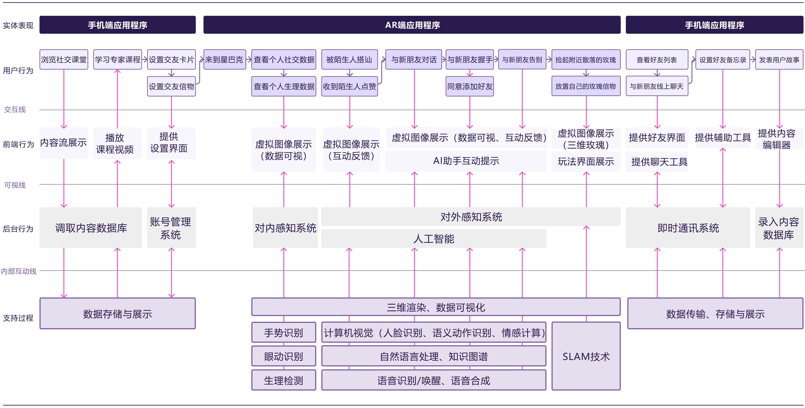
| Module | Features |
|---|---|
| Social assistance | AI prompts, positive reinforcement, attention redirection, and action demonstrations |
| Social cues | Focused-person cards, action recognition, and emotion recognition |
| Social interaction | Nod to like, wave to greet, handshake to connect, and Encounter Rose |
| User state | Intimacy, social popularity, social ability, heart rate, emotion, and anxiety indicators |
| System state | Visible spatial-scanning pulse and device status |
| Spatial Zone | Distance | Design Response |
|---|---|---|
| Intimate | Within 0.45 m | Show only urgent or private information through temporary gesture-triggered panels |
| Personal | Within 1.2 m | Provide rich profile, action, emotion, and interaction cues around the focused person |
| Social | Within 3.7 m | Reduce density, retain action markers, and use gaze for target selection |
| Public | Beyond 3.7 m | Keep the physical environment clear and retain only essential spatial information |
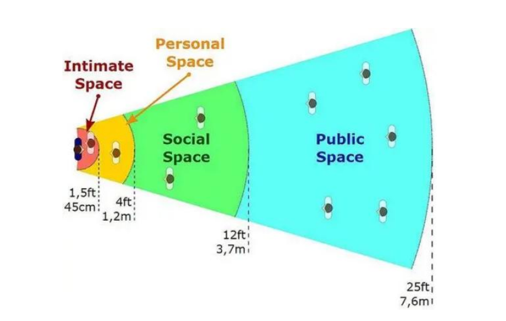
Priority 1: user-state information and urgent alerts. Priority 2: AI assistance, near-field feedback, focused-person cards, recognized actions, and emotions. Priority 3: far-field feedback and movement. Priority 4: environmental and geographic information.
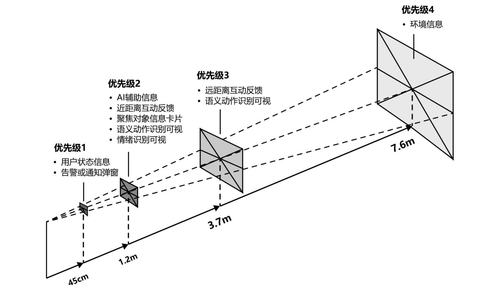
The visual direction combines the technological character of AR with the playful nature of a social product. AR visual elements use light pink, AR text interfaces use light blue-violet, and mobile interfaces use dark purple with high-contrast pink accents.
| Usage | Main Color | Supporting Colors |
|---|---|---|
| Mobile application | #281A4D | #EC4DC9, #A842E0 |
| AR avatar and atmosphere | #F792C1 | #7A599E, #FD0CED |
| AR text interface | #6A76FC | #B4ABFA, #D0F1F6 |
“H” is the emotional and functional representative of the system: healing, lively, approachable, simple, minimally anthropomorphic, transparent, futuristic, and intelligent.


The mobile application supports preparation before social interaction and relationship management afterward.
| Module | Features |
|---|---|
| Social Classroom | Expert courses, user stories, and contextual AI learning support |
| Account management | Profile information, permission-based social profile cards, and social tokens |
| Instant messaging | Friend list, friend requests, and limited chat replenished through offline interaction |
| Relationship maintenance | Dusty Friends reminders and private notes for preferences, birthdays, and relationship details |
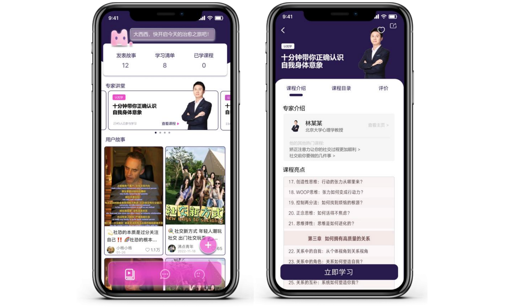
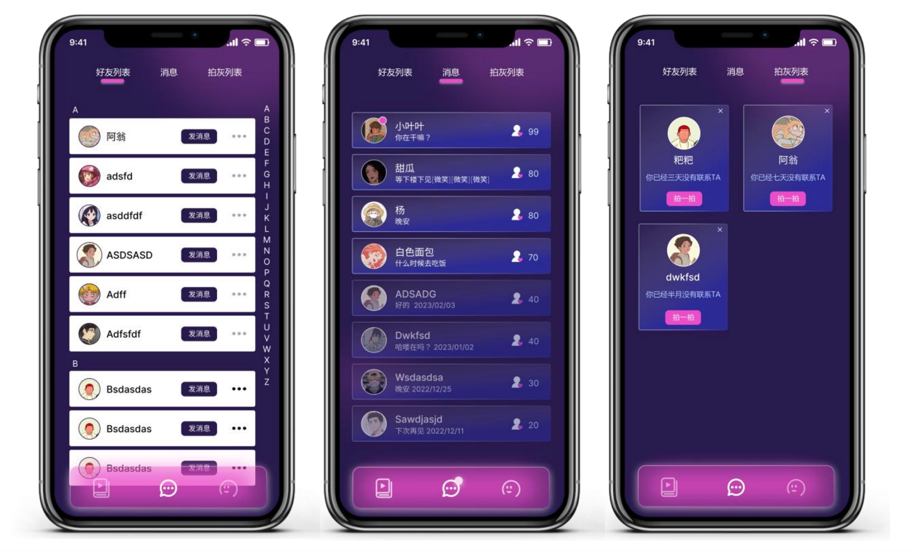
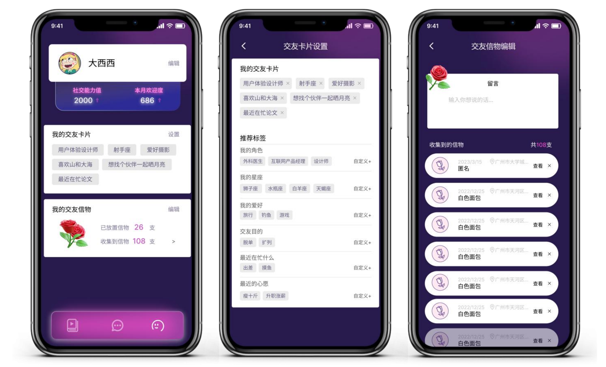
HiMeet translates research on social anxiety into a connected two-terminal product system. The mobile application prepares users before social interaction and supports relationship management afterward. The AR application intervenes during face-to-face interaction with contextual cues, adaptive assistance, visible feedback, and playful social mechanisms.
Core product logic: Learn before meeting → receive support while meeting → build a relationship through real interaction → maintain the relationship afterward.
Independently in charge of SMART CHARGING APP and MOBILITY AI PROJECT; Daily work covers: requirements research, product design, communication and implementation

Led the product planning and core feature design of SALESAI from 0 to 1. Daily work: product planning; product design; implementation
Sales team daily pain points:
High-frequency needs: Pre-sales "lead acquisition," in-sales "knowledge base search" and "information management" — all are high-frequency sales needs and key opportunities for AI-powered efficiency gains.
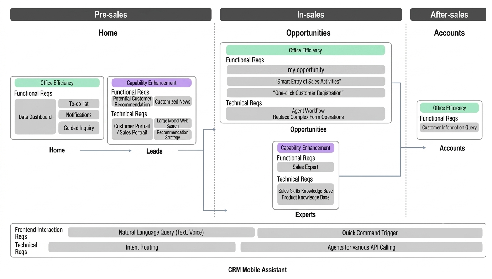
Only Prompt Engineering has severe limitations: relying solely on natural language definition and few-shots is highly unstable, resulting in skyrocketing error rates as intents scale.
Our Hybrid Strategies: Tailored for production-grade robustness—achieving minimal latency, multi-turn context retention, and zero-training maintenance.
Performance Comparison:
┌──────────────────────────────────────────────┐
│ USER QUERY INPUT │
└──────────────────────┬───────────────────────┘
│
┌───────────────────────┴───────────────────────┐
▼ ▼
[ 1. FAST-TRACK ROUTE ] [ 2. COGNITIVE ROUTE ]
Predefined Quick Commands Natural Language
│ │
┌───────────┴───────────┐ ┌─────────┴─────────┐
│ Keyword Regex Trigger │ │ LLM Analyst │
│ (Latency < 10ms) │ │ (Context Continu- │
└───────────┬───────────┘ │ ity Inheritance) │
│ └─────────┬─────────┘
│ │ [Is Multi-Turn?]
│ ├ Yes ──► Inherit Previous Intent
│ │
│ ├ No [Initialize Intent Flow]
│ ▼
│ ┌───────────────────┐
│ │ Semantic │
│ │ Vector Search │
│ └─────────┬─────────┘
│ │
│ ┌─────────┴─────────┐
│ │ Dynamically-tuned │
│ │ Similarity │
│ │ Threshold Filter │
│ └─────────┬─────────┘
│ │
▼ ▼
┌─────────────────────────────────────────────────────────────────────┐
│ ROUTED INTENT & API ACTION │
└─────────────────────────────────────────────────────────────────────┘
# Expert — Dual knowledge base routing
# Bridges the gap between data and action — build agent workflows
Work: Parking Assistant Product Demo
Ministry of Education
Graduate School of South China University of Technology
International User Experience Innovation Competition · Campus Pick-up Service Design ↗
Work: Waxing and Waning
Work: Circular Duck
Digital Media category · Work: Dream Shatter
International mathematical modeling competition